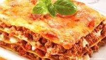

Lasagna de Carne

Tamanho médio
Aqui você vai aprender a fazer uma deliciosa lasanha de carne :)
É uma lasanha feita de forma rápida com ingredientes simples
Ingredientes
- 500 g de massa
- 2 caixas de creme de leite
- 500 g de carne moída
- 3 colheres de farinha de trigo
- 500 g de mussarela
- 2 copos de leite
- 3 colheres de oléo
- 3 dentes de alho amassados
- 3 colheres de manteiga
- sal a gosto
Modo de preparo
- Cozinhe a massa segundo as orientações do fabricante, despeje em um refratário com água gelada para não grudar e reserve.
- Refogue o alho, a cebola, a carne moída, o molho de tomate, deixe cozinhar por 3 minutos e reserve.
- Derreta a margarina, coloque as 3 colheres de farinha de trigo e mexa.
- Despeje o leite aos poucos e continue mexendo.
- Por último, coloque o creme de leite, mexa por 1 minuto e desligue o fogo.
- Despeje uma parte do molho à bolonhesa em um refratário, a metade da massa, a metade do presunto, a metade da mussarela, todo o molho branco e o restante da massa.
- Repita as camadas até a borda do recipiente.
- Finalize com o queijo ralado e leve ao forno alto (220° C), preaquecido, por cerca de 20 minutos.